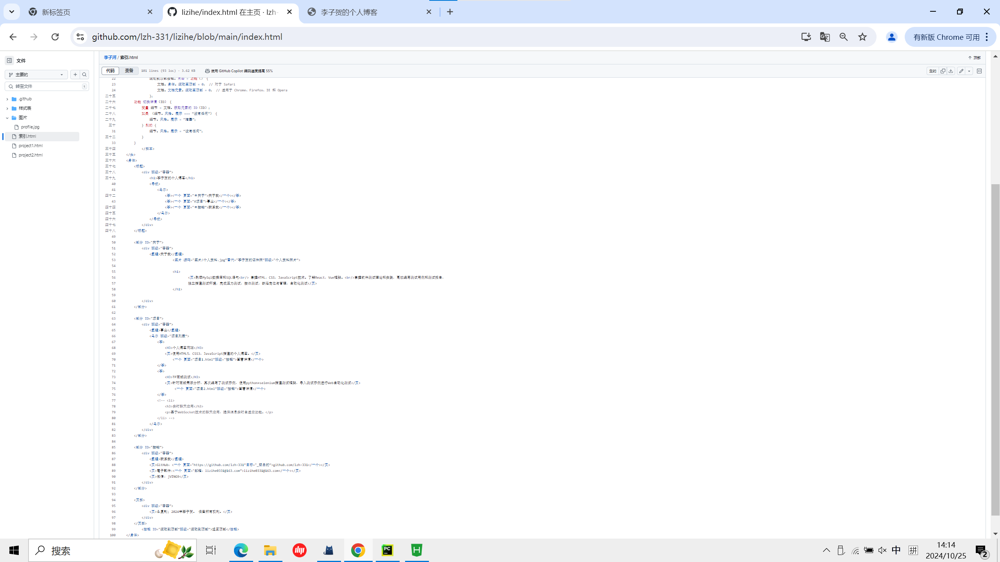

技术栈：
1.HTML5：用于构建网页的基本结构。
2.CSS3：用于设计和美化页面样式，包含布局、字体、颜色等。
3.JavaScript (ES6+)：用于实现交互和动态功能。
4.Vue 3：一个渐进式 JavaScript 框架，用于构建响应式用户界面。
5.Vite：下一代的前端构建工具，快速、轻量，适用于现代的 Vue.js 开发环境。
6.Markdown：支持用户使用 Markdown 语言编写和发布文章，提供简洁的写作体验。
7.Axios：用于处理与后端的 HTTP 请求，主要用于博客文章的获取和发布。
项目亮点：响应式设计：通过 CSS Flexbox 和媒体查询确保博客在不同设备上（桌面、平板、手机等）都有良好的用户体验。
单页面应用 (SPA)：使用 Vue 3 构建单页面应用，通过前端路由实现页面切换而无需刷新整个页面。
快速开发：通过 Vite 快速构建和热更新，提升开发效率。
部署：GitHub Pages
代码截图：
